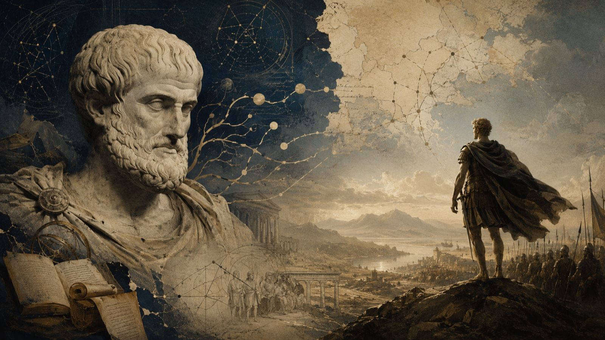

There is no Alexander
without Aristotle.
On intelligence as infrastructure, why the education system was never designed for you, and what it took to understand the world on my own terms.

There is a moment, in every Christopher Nolan film, where the rules of the world get revealed. Not announced. Revealed. Where you realise the system you have been watching operates on a logic deeper than the surface suggested. Inception calls it the dream layer. Tenet calls it the algorithm. I have watched both films more times than I should admit, and I think the reason they keep pulling me back is that they are secretly about the same thing: once you understand how a system actually works, you cannot unsee it. And once you have seen it, staying put becomes the riskier choice.
That is as close as I can get to describing the posture I try to bring to everything. Not to any single field. To the act of thinking itself. The question that has shaped how I move through the world is not “what should I do?” It is “how does this actually work?” They sound similar. They produce different lives.
My name is Pugalenthi Magendran. I live in Melbourne. I have studied finance and artificial intelligence, built and sold a newsletter company while still a student, spent time inside a frontier AI company, and worked at the edge of venture capital. I am now building at the intersection of AI systems and the compliance infrastructure that will have to govern them.
None of that biography is what this essay is about. This essay is about why I think the way I think, and an argument I keep returning to: how you think compounds faster than almost anything else. Get it right early and everything downstream accelerates. Get it wrong and no amount of effort fully compensates.
The oldest pattern
Before Alexander became the conqueror of the known world, he was a student. Aristotle taught him for three years. Not military tactics, but biology, philosophy, medicine, rhetoric, and the structure of knowledge itself. He was taught how to think before he was given anything to think about. And then he went out and built one of the largest empires the ancient world had seen.
I find this pattern more interesting than the conquest. The conquest is just what happened when the thinking was in place.
There is something worth sitting with in how we got here as a species. We are not the strongest creatures on earth, not the fastest, not the most physically capable. A chimpanzee is stronger than me. A falcon sees better. A dog detects things I will never perceive. What we can do that none of them can is compress accumulated understanding across generations and build on top of it. Read what Aristotle wrote, abstract from it, disagree with it, and use the disagreement to construct something new. That loop, understanding compounding into further understanding, is the thing that most distinguishes human civilisation.
And yet we have constructed an educational system that treats intelligence as a credential to be obtained rather than a capacity to be developed. That is a strange thing to have done. It is worth asking how it happened.
The machine that consumes your most important years
What is the university system actually designed to produce?
The first-principles answer is not what the brochures say. The dominant function of universities in their modern form has been to produce credentialed, moderately specialised workers who slot into the industrial economy without friction. They operate as sorting mechanisms as much as learning institutions. They stamp people with signals that employers can use, not because employers need the knowledge, but because they need the filter. Your personal development is, at best, a side effect of a system designed primarily for economic continuity.
I want to be careful here, because this observation is easy to state and easy to overstate. Universities contain extraordinary people and produce genuine understanding. The problem is not the institution itself. The problem is the assumption that the institution’s agenda and your agenda are the same. They are not. Knowing the difference is one of the most useful things you can figure out early.
The deeper issue is this: we force people barely out of adolescence to make decisions that shape the entire trajectory of their lives, what to study, which career to pursue, who to become, at the moment when they have the least information to make that decision well. You are asked to choose a direction before you have walked in any direction. You are asked to identify your strengths before you have tested them against anything real.
You cannot know whether you like a food until you have tasted it. Not from reading about it. Not from watching someone else eat it. You have to put it in your mouth. And yet we have built a system that pressures people to order a meal they will eat for forty years without ever letting them taste the kitchen. The pressure is not malicious. It is structural. But the result is the same: a large number of people living inside choices they made before they knew themselves.
On not locking yourself into one room
Here is something I understood about myself only by watching where my attention went when nothing was directing it: I do not identify with a single domain. I never have. And for a long time I thought this was a problem.
The world rewards specialists. The credential system, the job market, the LinkedIn headline, all of it is designed to make you narrow yourself until you fit a defined shape. There is real pressure, especially early, to comply. To pick a lane. To become legible to institutions that can only process you if you are legible.
What I came to understand is that this pressure confuses legibility with depth. Being legible means someone can quickly categorise you. Having depth means you can actually do things. They are not the same, and in many cases they pull in opposite directions.
Finance, when I studied it seriously, did not teach me to read balance sheets. It taught me to think about leverage: where in any system is force most efficiently applied, what compounds and what merely adds, which positions become disproportionately valuable over time. These are not finance concepts. They are structural concepts that finance happens to make concrete. Artificial intelligence, when I went deep into it during a research degree, did not teach me to fine-tune models. It taught me the difference between a system that generalises and one that memorises, and how hard it is to tell them apart from the outside. That distinction turns out to apply to organisations, to arguments, to people.
Every serious domain is a lens. The person who looks through multiple lenses, genuinely and not as a tourist, sees things that the person who looks through only one cannot. The world is not organised into academic departments. It only looks that way from inside the university.
The counterbalance is worth stating plainly: there is a version of this that is just sophisticated dilettantism. It goes wide and never goes deep, collecting perspectives the way some people collect books, accumulating the appearance of understanding without the friction that produces the real thing. Mastery is not optional. You have to go deep somewhere. You just do not have to let the place you went deep first determine every place you ever go.
Tasting things
During my undergraduate years, almost on instinct, I started a newsletter company called Minds and Machines. It explored the intersection of human intelligence and technology, which I now realise is the intersection I have been trying to understand my entire life, just without the vocabulary for it at the time. I wrote it, grew a readership, and sold it before I graduated.
Nobody told me to do it. No mentor had suggested it as a strategy. I did it because something needed testing: whether I could build something from nothing, whether ideas had weight outside my own head, whether there was a loop between thinking and making that I could actually close.
The newsletter was not a great business. But it was the most important calibration instrument I had at the time. When I sat down to write each piece, I discovered what I actually understood versus what I had merely encountered. That distinction, between understanding and encounter, is one of the most useful things you can learn to feel. The only reliable way to feel it is to try to explain something clearly to someone who does not already know it. Writing does this. Teaching does it. Building something that has to survive in the real world does it. Sitting in a lecture hall largely does not.
I sold Minds and Machines and made the decision that the next chapter would be spent developing genuine fluency in artificial intelligence. Not familiarity. Everyone was developing familiarity. Fluency: the kind where you can read the primary literature, understand the tradeoffs, build working systems, and know when a benchmark result is telling you something true versus something convenient. I spent two years in a research degree working on vision-language models for retinal disease classification, teaching foundation models to detect glaucoma and diabetic retinopathy from fundus images. Unglamorous domain. Genuinely hard problem. The kind of work that gives you an accurate picture of where AI actually breaks, rather than where the demos suggest it might.
That calibration is what I carry most from that period. Not any specific result. The calibration.
What I keep returning to
The more I understand, the more clearly I can see the boundaries of what is understandable.
Godel showed in 1931 that any sufficiently powerful formal system contains true statements it cannot prove from within itself. It is a result from mathematics, but what it points at is more general: the map cannot fully contain the territory it describes. We are inside the system we are trying to understand, which means there are features of it we are structurally limited in seeing, regardless of how hard we look.
I find this clarifying rather than paralyzing. It tells me the right posture is not certainty but calibrated curiosity. The person who has stopped asking questions has not arrived somewhere. They have stopped somewhere. Holding your models loosely is not intellectual weakness. It is the only rational response to operating inside a system you cannot fully see.
This is why first principles matter more to me than any particular answer. Answers age. The method for generating better ones compounds. Aristotle’s specific biology was wrong in dozens of ways. His insistence on examining a thing from its foundations rather than from received authority produced a mode of inquiry that is still among the most reliable we have, two and a half thousand years later.
The same principle applies to how I think about AI, which is increasingly a tool for extending the reach of that inquiry. Not a replacement for it. The difference between those two framings is not semantic. It determines almost everything about how you build with the technology, what you expect from it, and where you refuse to outsource your judgment.
What this is
I am in the middle of it. Not yet arrived, deeply committed. I have the advantage of not yet knowing what I cannot do. I also have the disadvantage of not yet having done most of it. Both are true at once.
I write here to document the thinking as it develops. Not to present conclusions but to show the work. AI, systems, intelligence, the education question, what it means to build things that have to survive contact with reality. The mistakes get named here as precisely as the insights, because the mistakes are usually more instructive.
A plain statement of what this is not: it is not an attempt to build a personal legend. The essays that hold up over time are the ones where the writer is genuinely trying to understand something, not the ones where the writer is trying to appear as someone who understands things. I am aware of the difference. I am trying to stay on the right side of it.
The thread running through all of it is the thing I started with. Once you see how a system actually works, you cannot unsee it. And the more layers you see through, the more responsible you feel for what you do with that sight. This writing is an attempt to honour that.
This is Essay No. 001. I write when I have something worth saying, not on a schedule. The topics: intelligence, AI, systems, knowledge, and the questions underneath the questions everyone else is asking. You can reach me directly. I read everything.